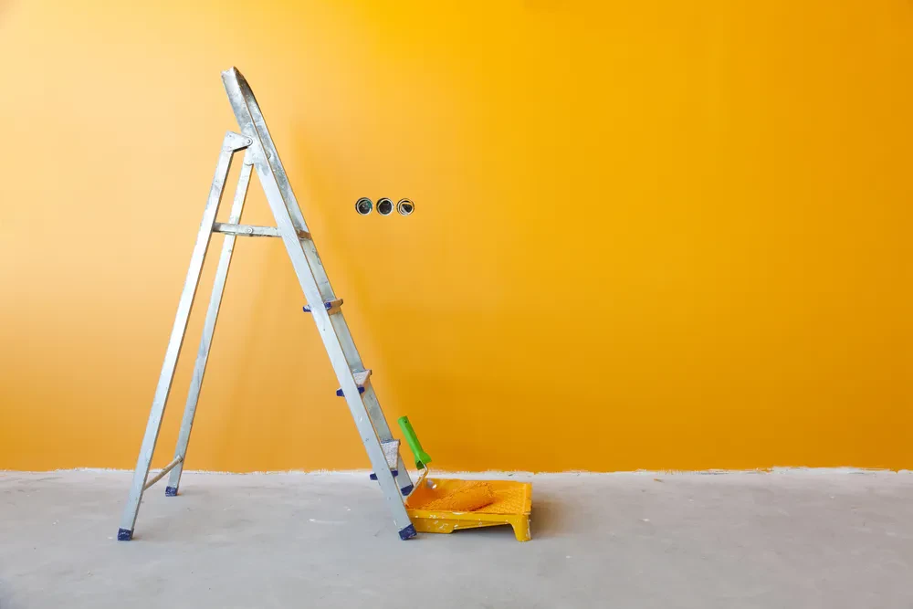
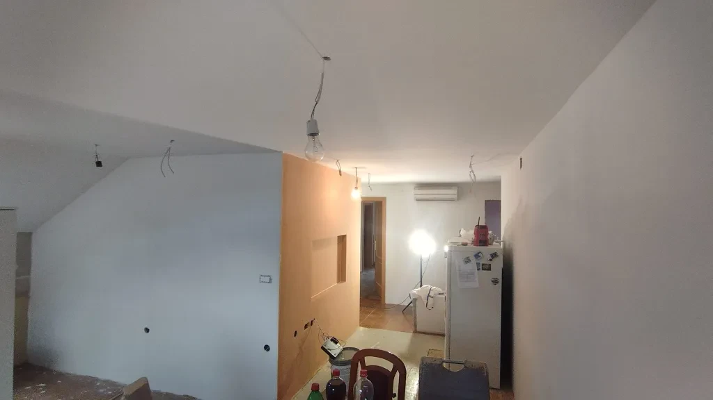
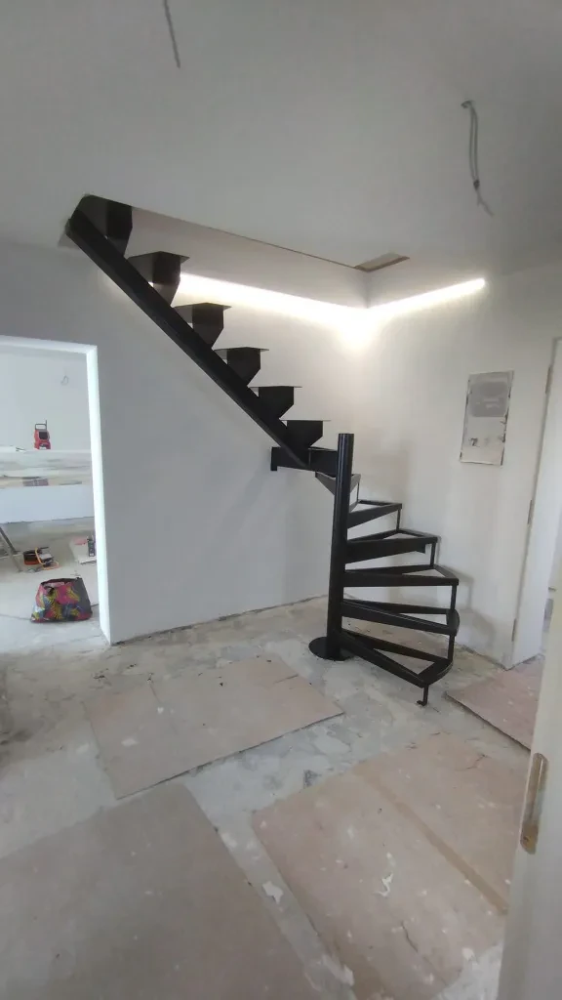

Na Savinjskem iščete mojstra za hitro, ugodno in kvalitetno pleskanje stanovanj? Poskrbimo, da vaš prostor s svežim nanosom barve ponovno zaživi – od mat odtenkov do naprednih dekorativnih učinkov.
Kako delamoDobra priprava je ključ do popolnega rezultata. Naši mojstri temeljito zaščitimo pohištvo in tla, pri brušenju poskrbimo za minimalno prašenje, uporabimo pa trajne in okolju prijazne premaze.
Kitanje, brušenje in odstranjevanje starih slojev. Temeljita zaščita pohištva in tal.
Kakovostni premazi, izbrani glede na pogoje v prostoru, ki zagotavljajo obstojnost in lepoto.
Od elegantnih mat odtenkov do živahnih modernih tekstur. Svetujemo pri izbiri kombinacij.
Zaključek projekta v dogovorjenem roku. Brez nepotrebnih zamud in s popolnim redom.
// PREVERI NAŠE ODTENKE Z MIŠKO:



Več realizacij in modernih dekorativnih tehnik si oglejte na našem profilu.
FB: Uroš Vrečko ↗// Lokacija
Podgorje 1
3000, Celje
// O delu
Delujemo po vsej Savinjski regiji. Potrebujete svetovanje pri izbiri barv ali nujno pleskanje? Na voljo non-stop.
// Cenik & Povpraševanje
Cena je odvisna od stanja površin in izbranih materialov. Pokličite za brezplačno oceno in svetovanje.